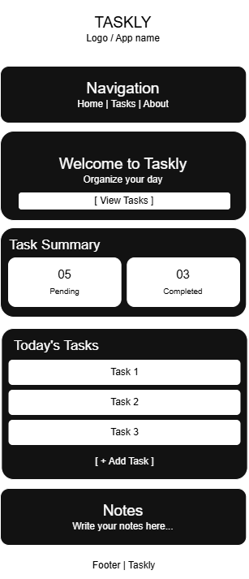
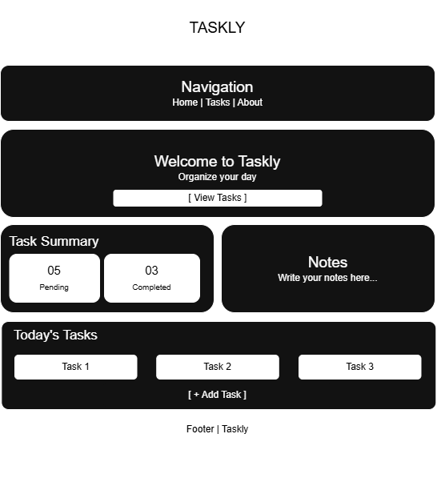

1. Site Name
Taskly
I chose this name because the website is about organizing daily tasks. It is short, easy to remember, and related to what the website does.
Optional Domain: taskly.app
2. Site Purpose
Taskly will help users organize their daily activities in one place. Now we can create, edit, delete, and complete tasks, add notes, and organize tasks into categories. The website will also show their progress and save their information using local storage.
3. Scenarios
- How can I organize my daily tasks in one place?
- Can I keep my tasks saved after closing the browser?
- How can I see which tasks I have already completed?
4. Color Scheme
These are the main colors I will use on the website:
Primary Color — #1F1032
Used for headings, navigation, and buttons.
Secondary Color — #F3F4F6
Used for the page background and some sections.
Accent Color — #10B981
Used for completed tasks and progress indicators.
Text Color — #222222
Used for paragraphs and other text.
5. Typography
Montserrat
Used for headings and navigation.
Organize Your Daily Tasks
Roboto
Used for paragraphs, forms, and task descriptions.
Keep your daily activities organized.
6. Wireframe
The wireframes show how the home page will look on mobile and desktop screens.
Mobile View

Desktop View
